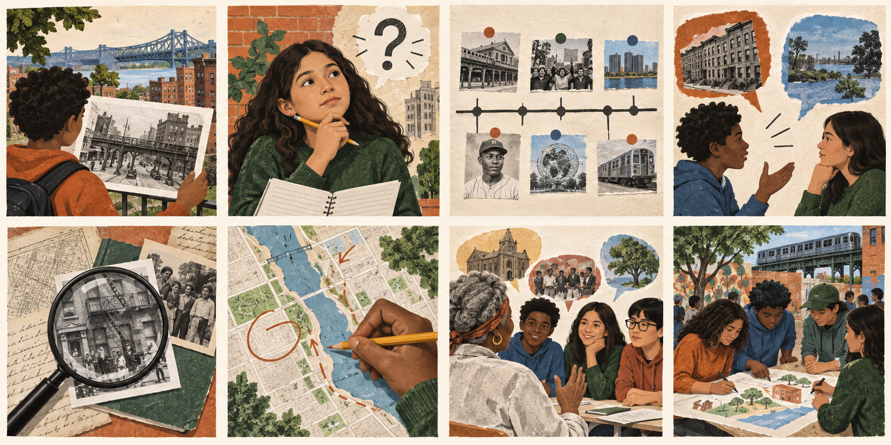
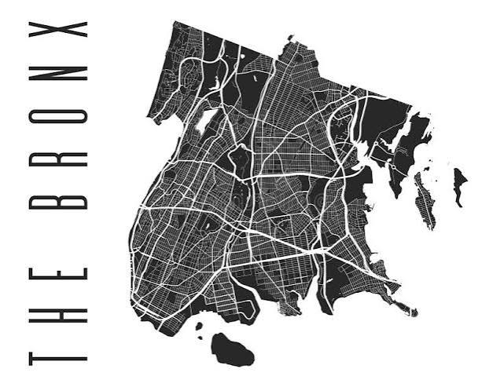
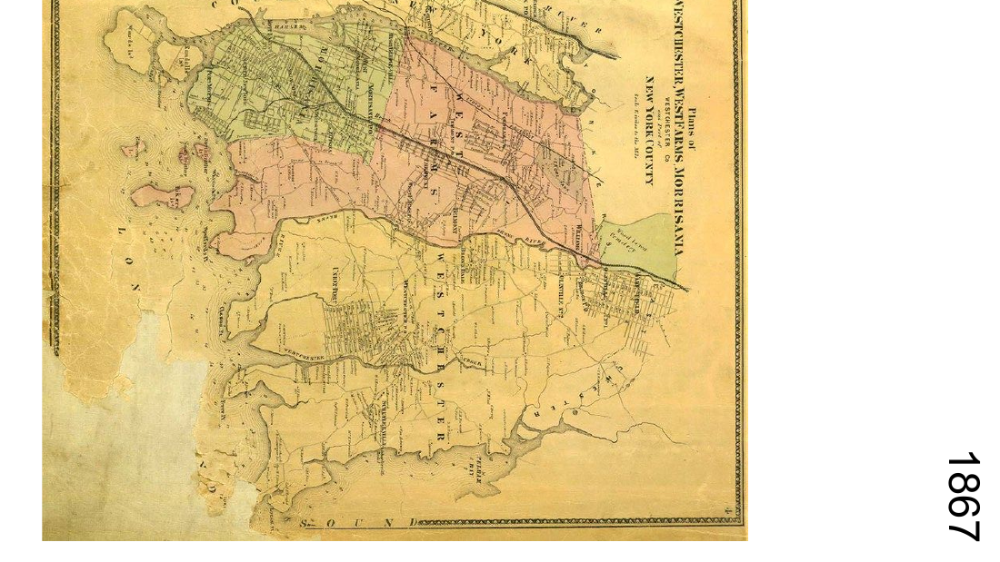
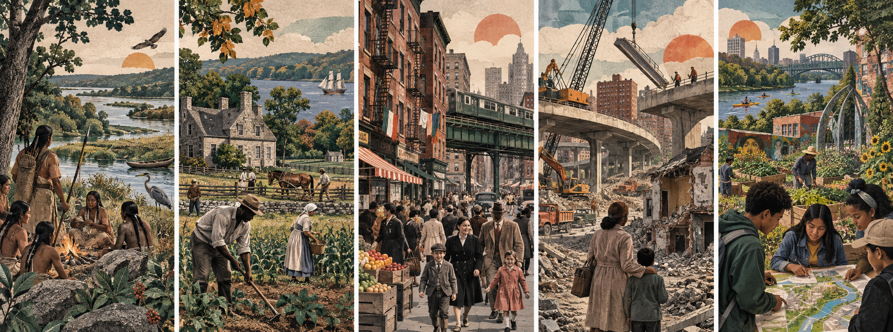
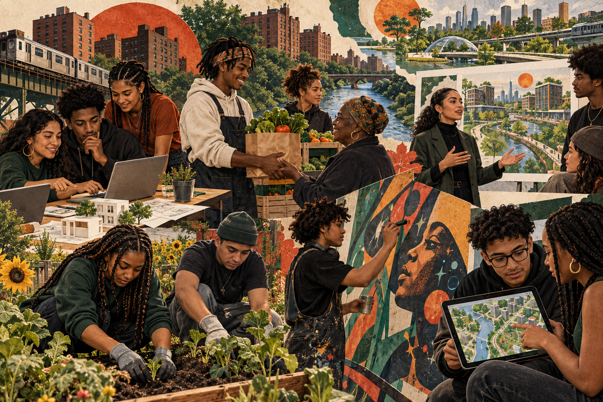

01 · INTRODUCE
Dominant & counter-narratives
Notice how language, images, and point of view shape what counts as “the story.”
01 · Story
Before we tell a story about the Bronx, we have to notice how the story was made—and decide what we want to add.

Your first investigation
Stories are built from choices: what gets shown, what gets named, who gets quoted, and what is left outside the frame. Work through these moves, then choose a chapter and keep asking.
Choose a chapter
Click a door to change the resources below.

Notice how language, images, and point of view shape what counts as “the story.”

Build background about land, Indigenous life, slavery, migration, and settlement.

Follow how neighborhoods, residents, institutions, and public stories change over time.

Ask how American cities are shaped by decisions about highways, housing, investment, and power.

Study a community-centered account of disinvestment, survival, organizing, and renewal.
Resources for this chapter
Choose a chapter above. The source set changes here so you can read, watch, look closely, and put different kinds of evidence in conversation.
Check your thinking
What is the source asking you to believe?
What evidence supports that story?
Whose experience is centered—and whose is missing?
What would you need to learn before making a judgment?
Portfolio mastery
Choose one source set and demonstrate Compare, Corroborate, or Interpret. Make a one-page source note, audio reflection, annotated image, or short video that shows your claim, your evidence, and what you revised.
What story is this source telling?
Which details make your case?
What became more complicated?
Make something
Interview someone about a Bronx place, memory, or change. With consent, create a short oral-history entry that includes one quote, one piece of context, and one question you still have.
See possible formats →